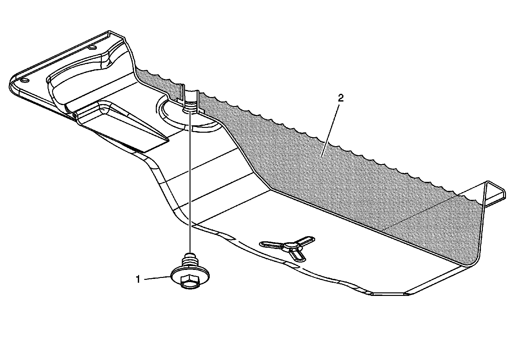

Transmission Fluid Checking Procedure
Transmission Fluid Check
This procedure checks both the transmission fluid level, as well as the condition of the fluid itself. Since the transmission on this vehicle is not equipped with a fill tube and dipstick, a tube in the bottom pan is used to set the fluid level.
Notice: The transmission fluid level must be checked when the transmission fluid temperature (TFT) is between 30-50°C (86-122°F). If the TFT is not within this range, operate the vehicle or allow the fluid to cool as required. Setting the fluid level with a TFT outside this range will result in either an under or over-filled transmission. TFT>50°C=under-filled, TFT<30°C=over-filled. An under-filled transmission will cause premature component wear or damage. An over-filled transmission will cause fluid to discharge out the vent tube, fluid foaming, or pump cavitation.
1. Observe the TFT using the driver information center (DIC) or a scan tool.
2. Start and idle the engine.
3. Depress the brake pedal and move the shift lever through each gear range. Pause for at least 3 seconds in each range. Move the shift lever back to PARK. Ensure the engine RPM is low (500-800 RPM).
4. Allow the engine to idle for at least 1 minute.
5. Raise the vehicle on a hoist. The vehicle must be level, with the engine running and the shift lever in the PARK range.

Notice: THE ENGINE MUST BE RUNNING when the trans oil level check plug is removed or excessive fluid loss will occur, resulting in an under-filled condition. An under-filled transmission will cause premature component wear or damage.
Important: Continue to monitor the TFT. If the TFT is not within the specified values, reinstall the trans oil level check plug and repeat the previous steps.
6. Remove the trans oil level check plug (1) from the transmission fluid pan. Allow any fluid (2) to drain.
* If the fluid is flowing as a steady stream, wait until the fluid begins to drip.
* If no fluid comes out, add fluid until fluid drips out. Refer to Transmission Fluid Fill Procedure (Procedures) .
7. Inspect the fluid color. The fluid should be red or dark brown.
* If the fluid color is very dark or black and has a burnt odor, inspect the fluid and inside of the bottom pan for excessive metal particles or other debris. A small amount of "friction" material in the bottom pan is a "normal" condition. If large pieces and/or metal particles are noted in the fluid or bottom pan, flush the oil cooler and cooler lines and overhaul the transmission. If there are no signs of transmission internal damage noted, replace the fluid filter assembly, repair the oil cooler, and flush the cooler lines.
* Fluid that is cloudy or milky or appears to be contaminated with water indicates engine coolant or water contamination. Refer to Engine Coolant/Water in Transmission (Engine Coolant/Water in Transmission) .
Notice: Refer to Fastener Notice (Fastener Notice) .
8. Replace the trans oil level check plug and tighten to 25 N.m (18 lb ft).
9. Inspect for external leaks. Refer to Fluid Leak Diagnosis (Fluid Leak Diagnosis) .
10. Reset the oil life monitor only if the fluid was changed.